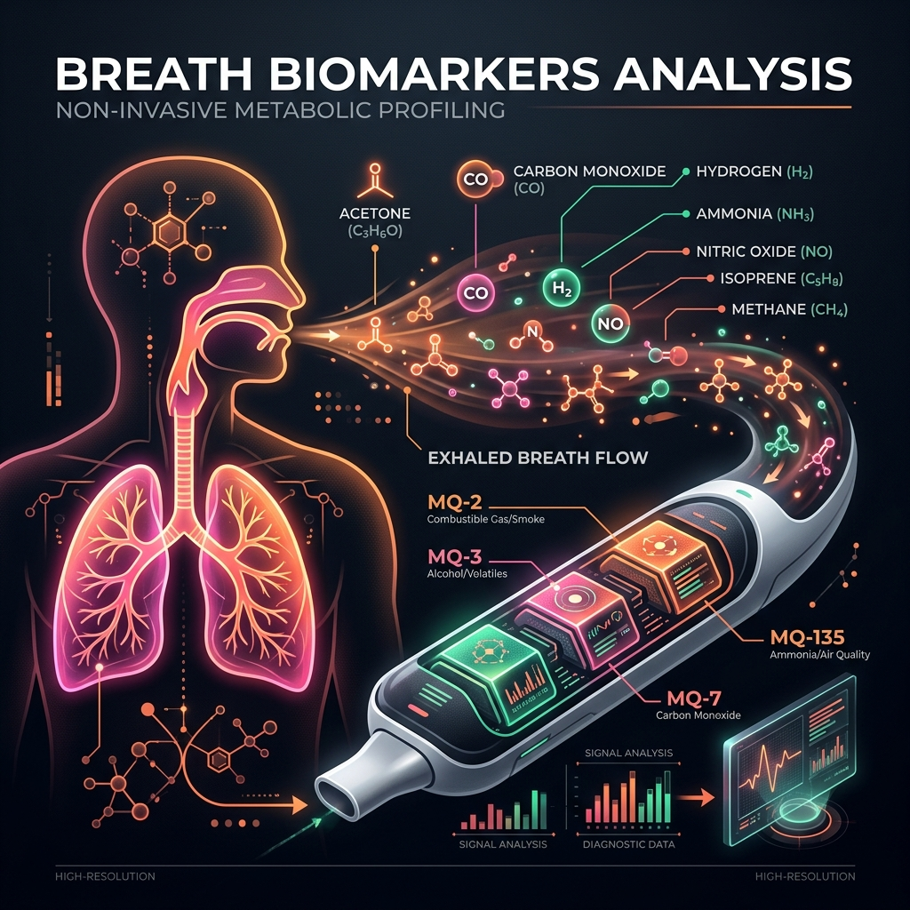

Advanced breath analysis for proactive health monitoring

Biomarker analysis through MQ sensor gas detection
Monitor real-time gas concentrations from MQ sensors with interactive charts and status indicators.
AI-powered disease detection with probability analysis and health flag alerts for 12+ conditions.
Continuous monitoring with ESP32 integration for live data streaming and instant health insights.